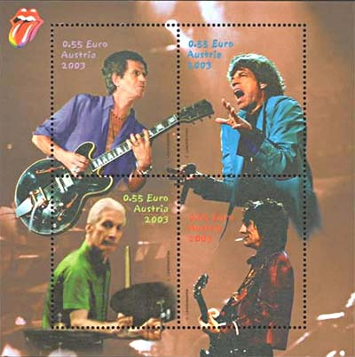
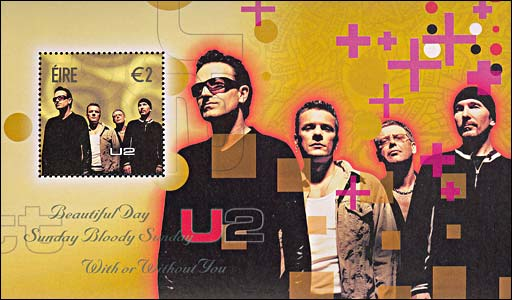

|
Created:
10/18/03. Revised:
01/07/06. |
|
|
SIMON & GARFUNKEL TOUR 2003 "The folk singers Paul Simon and Art Garfunkel reunited this fall (2003), many years after their separation, for a concert tour of North America. I believe that the authors of unforgettable "El Condor Pasa", "The Sparrow", and "The Sound of Silence" deserve a stamp, and this *before* they pass by." This posting of Victor Manta, appeared with the subject line "They deserve a Stamp", was amply commented on RCSD. It has finally prompted the SNA Design Team to propose a miniature sheet that should commemorate the mentioned event. The sheet appeared on Oct. 18, 2003, and it was printed by the Courvoisier SNA Security Printer, at Ciudad de Leon, SNA. It can be found at all serious philatelic shops of the SNA. The print run is of only 100,000 pieces. One of RCSD
participants has correctly noticed that: "If you are talking about a US
stamp, you are forgetting the requirement that the honoree be dead for 10
years." The position of the initiator of the thread was expressed by: "It is
because I know this rule that I have (indirectly) suggested that it should
be repealed. If not, it is Liberia, Gambia, and especially the agencies that
represent such countries that will continue of taking profits (plus the
illegals' producers, of course), by issuing stamps dedicated to US and other
artists.  Please take a look at the nice sheet issued by the Austrian PA, and dedicated to Rolling Stones concert 2003 in Vienna.  The above sheet was issued in 2003 too, and it shows the most successful Irish pop group U2. In my opinion, this is the way to follow if we wish bringing the youth (and not only!) to stamp collecting. As for the argument that 10 years after death is a right time to wait till issuing a stamp, because more will be known about the involved person, may I propose the stamp issued by the US postal administration, and dedicated to Frida Kahlo (1907 - 1954). This stamp was issued in 2001, what means 47 years after painter's death, when everybody who wished to know could quickly find out about Ms. Kahlo's collaboration with Stalin's secret police (KGB) and about her role in the murder of Leon Trotsky. Nevertheless, it appeared! I wonder what can do more horrible members of groups like Pink Floyd, Deep Purple, Led Zeppelin, etc.? Actually, ten years after their death I'll be dead too, and a stamp eventually dedicated to them will bring me as much as it will bring them...
|
|
Created:
10/18/03. Revised:
01/07/06. |
|